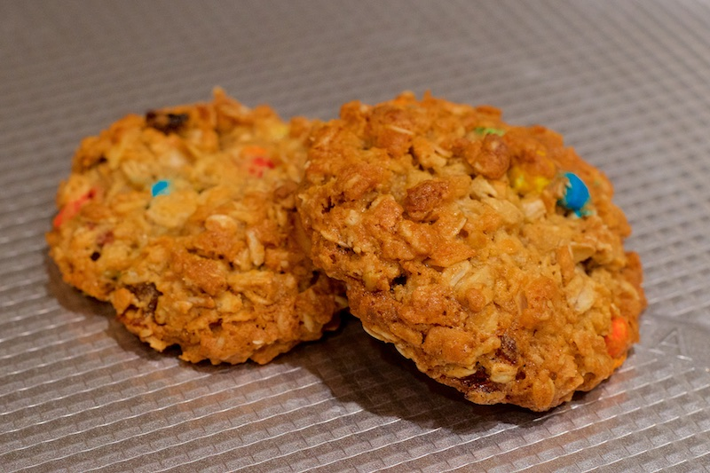

OATMEAL COCONUT PANTRY COOKIES Chef Roman August 24, 2018
010 RELATED RECIPES:
Melt-in-the-mouth Cookies
German Chocolate Cake
TOP 011 RECIPES:
Umeboshi Chicken
Battleship Curry
Grain Mamer Scuffe

Prep time:
30 minutes
Cooking time:
9-13 minutes
Skill level:
Easy
Makes:
24 cookies
Ingredients
2/3 cup granulated sugar
2/3 cup packed brown sugar
1 cup butter
2 eggs
1 teaspoon vanilla
1 teaspoon baking soda
1/2 teaspoon baking powder
1/2 teaspoon salt
3 cups quick-cooking or old-fashioned oats
1 cup all-purpose flour
1 1/2 cup Toasted Coconut*
1/2 cup golden raisins
1/2 cup chopped walnuts
1/2 cup mini chocolate chips
*Now with more coconut
Directions
Toast coconut at 350F for about 10-15 minutes. Stir/toss every 5 minutes. Coconut should be golden brown. Be careful...coconut can go from golden brown to burnt very quickly. Cool completely.
Using mixer, beat sugar, butter, vanilla, and eggs.
Mix all other ingredients together. The flour should coat all the ingredients. Then mix into the wet ingredients.
When scooping cookies, press the dough firmly the ensure the shape is held.
Bake at 375F for about 9-13 minutes. This really depends on how big you made the cookies. Start at 9 minutes, and then just keep checking until they are done.